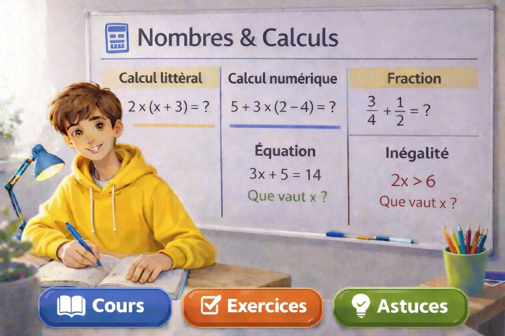

Ensembles de nombres
Reconnaître les entiers, rationnels et réels, comprendre l’appartenance et l’inclusion.
Maths Seconde • Nombres et calculs
Revois les notions essentielles du programme : ensembles de nombres, intervalles, arithmétique, calcul littéral, racines carrées, puissances, équations et inéquations, avec des explications simples, des exercices ciblés et un entraînement interactif.

Organisation du chapitre
Chaque carte ouvre une page complète avec cours, exercices, vidéo et astuce.
Reconnaître les entiers, rationnels et réels, comprendre l’appartenance et l’inclusion.
Lire, écrire et interpréter les intervalles ainsi que la réunion et l’intersection.
Étudier les multiples, diviseurs, critères de divisibilité, nombres premiers et décompositions.
Utiliser la distributivité simple et double ainsi que les identités remarquables.
Mettre un facteur commun en évidence et reconnaître les formes classiques à factoriser.
Comprendre la définition, simplifier certaines écritures et effectuer des calculs simples.
Maîtriser les règles de calcul sur les puissances et manipuler les puissances de 10.
Résoudre des équations du premier degré avec méthode et vérifier la solution trouvée.
Résoudre des inéquations simples et représenter les solutions sous forme d’intervalles.
Méthode
L’idée est de comprendre d’abord, puis de s’entraîner progressivement avec des exercices variés et un quiz rapide.
Commence par comprendre les définitions, les notations et les règles de calcul.
Entraîne-toi sur des questions courtes avant de passer à des exercices plus longs.
Utilise le quiz interactif pour vérifier tes connaissances et repérer tes erreurs.
Génère de nouvelles séries d’exercices pour consolider les automatismes.
Vidéos pédagogiques
Tu peux remplacer ces emplacements par tes vidéos YouTube ou TikTok sur chaque notion.
Une vidéo pour apprendre à reconnaître les ensembles de nombres.
Une méthode progressive avec des exemples courts et efficaces.
Exercices interactifs
Choisis un thème puis affiche une nouvelle série de 3 exercices tirés au hasard.
Quiz interactif
Lance un quiz aléatoire de 3 questions, réponds, puis consulte la correction, l’explication, la progression et ton score.
Le score apparaîtra ici après la correction du quiz.
Repères essentiels
Quelques idées simples à garder en tête pour réussir plus facilement.
Savoir si un nombre est entier, rationnel ou réel évite beaucoup d’erreurs.
Les crochets ouverts ou fermés changent le sens d’une solution.
En développement, factorisation ou équations, chaque ligne doit être claire.
Relire ou tester une solution permet de repérer vite une erreur de calcul.
Message rassurant
En seconde, beaucoup d’élèves se bloquent sur les calculs parce qu’ils mélangent les règles ou vont trop vite. Avec des exemples bien choisis, des rappels clairs et un entraînement progressif, ces notions deviennent beaucoup plus accessibles.